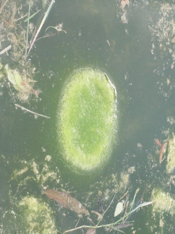

lumut1 
/lumut/
n.
a slimy, green water weed
Ka seini ne lalag iyan sika se diyè te weyig ne meilem ka batek melimerang ne egkagen-genan su bayew malurek wey lapek iya seini te weyig ne egkeenen degma seini te me ngalap te weyig.
Duen e lumut te pispan ku su warad e peit.
There's already Algae in my fishpond cause no more fish.
Eng. water weed; slime; weed, water; algaes
Ceb. lumot
OCM: Flora (137)
DDP: Moss, fungus, algae (1.5.4)
Online dict status: -
Usage level: RT
Updated by: RJH,QDL
Last updated: 13/Oct/2009
This page last updated: 03-Jan-2020
Copyright © 2009-2014, Matigsalug Language Christian Association, Inc